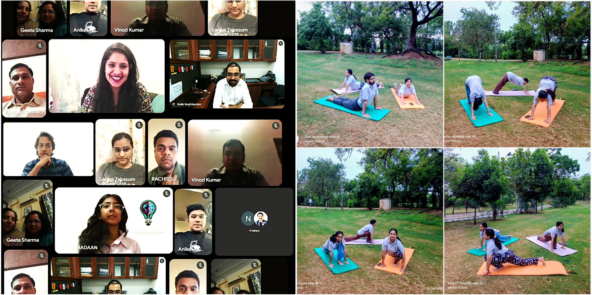
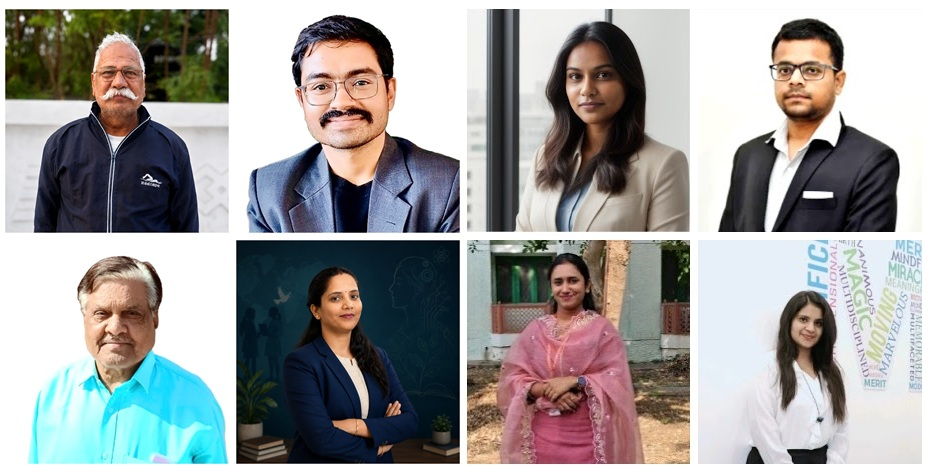
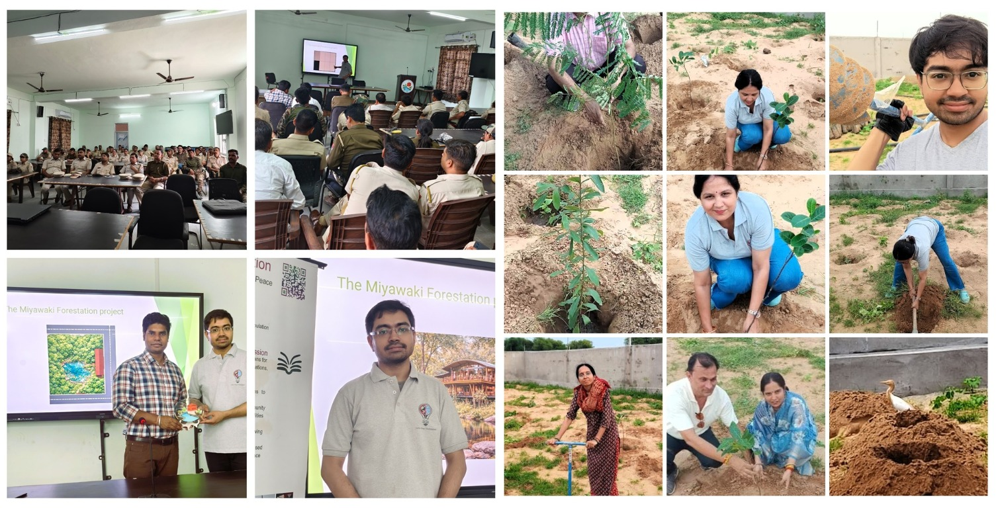
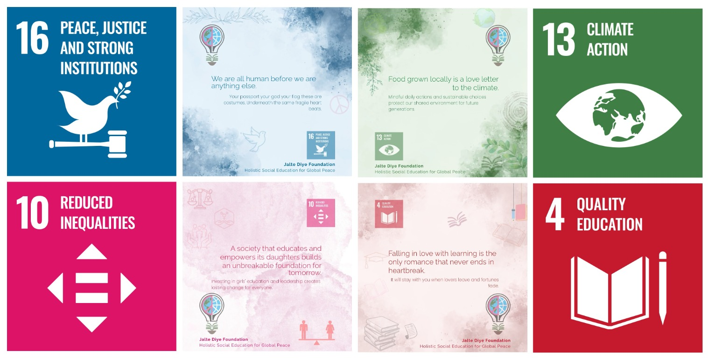
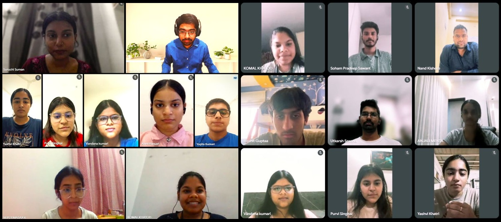

Jalte Diye Foundation (JDF)
Empowering individuals through holistic social education to achieve global peace
Our Projects and Initiatives
Innovation in Action
These projects and initiatives represent our current focus areas for long-term social impact.
We are combining healthcare, education, environment, technology, and mental well-being interventions to build practical and sustainable change.
Program Areas We Are Building
Each initiative area follows a simple framework: identify the problem, implement a practical solution, track outcomes, and invite community support.
- Education: Problem: gaps in practical social learning. Solution: awareness sessions and learning platforms. Outcome: improved participation and civic understanding.
- Women Empowerment: Problem: unequal access to technical mentorship. Solution: women-focused outreach and learning partnerships. Outcome: stronger confidence and skill participation.
- Healthcare: Problem: access barriers to basic consultation support. Solution: community-linked clinic outreach. Outcome: affordable care touchpoints for local families.
- Environment: Problem: declining green cover and climate stress. Solution: Miyawaki-based plantation and training. Outcome: denser native plantation activity.
- Rural Development: Problem: uneven access to awareness and opportunity. Solution: outreach-oriented social education support. Outcome: stronger community participation and informed decision making.
1. Deepak Jyoti Clinic

Deepak Jyoti Clinic is a healthcare-focused initiative based in Jaipur, serving local community members through inexpensive or free consultation and routine care support. It reflects our belief that basic healthcare should be accessible, respectful and rooted in the neighbourhoods it serves.
Health, however, is more than treatment. The picture on the left shows an online mental health awareness event, where participants, speakers and the JDF team came together to talk openly about emotional well-being, a subject that is still rarely discussed in many communities. Conversations like these help reduce stigma and encourage people to seek support early.
The pictures on the right capture our Yoga Day celebration, held around International Day of Yoga on 21 June. Participants practised simple yoga postures outdoors on mats in a park, showing that regular movement and breathing practice are easy, low-cost ways to look after physical health. Together, the two events show our whole-person approach: care for the mind and care for the body.
Location focus: Jaipur, Rajasthan
2. Really Real Education

ReallyRealEducation.org is an educational initiative of Jalte Diye Foundation that shares free books, blogs and journals so that learning is accessible to everyone. Its focus is meaningful learning, civic awareness and personal growth through social education.
The platform is only as strong as the people behind it. Our JDF mentors guide learners, review and shape the content, and help readers connect ideas to real life, while our on-site team supports learners in person and keeps the programme running on the ground. Their combined effort allows an online library to become a genuine learning community.
The initiative aligns with our foundation values by encouraging reflective thinking, responsible citizenship and dialogue-based understanding for long-term social harmony.
Initiative type: Free/affordable Education content and awareness platform #SDG4
3. Miyawaki Forestation Project

This project, also known as the GVan Microforest Initiative, promotes dense native plantations using the Miyawaki method to accelerate green cover restoration in limited urban and semi-urban spaces. Developed by Japanese botanist Dr. Akira Miyawaki, the method relies on native species, high-density planting and multiple layers of vegetation, so that a small patch of land can grow into a self-sustaining, biodiverse forest much faster than conventional plantations. #SDG13
The project began with awareness. The photographs on the left show our session on the Miyawaki method at RVTR, where the idea was explained to an audience of uniformed officials and staff, along with how small land patches can be turned into microforests.
The photographs on the right show the forestation work on the ground: volunteers preparing planting pits in sandy soil, planting and tending saplings, and setting up a water source for the site. Our goal is to improve local biodiversity, strengthen climate resilience, and create community-owned ecological assets.
4. Cognitive Agentic AI System for Social Education

Cogentic AI is an automated content publishing system built for Jalte Diye Foundation. Every day it generates fresh educational and social-impact content, evaluates each post for relevance, grammar, educational value, social impact and originality, renders poster images, and prepares the content for our website and social channels. #SDG4
The images above show its output: each poster pairs a short, reflective message with the relevant UN Sustainable Development Goal, such as Peace, Justice and Strong Institutions (SDG 16), Climate Action (SDG 13), Reduced Inequalities (SDG 10) and Quality Education (SDG 4). The posters carry the foundation's identity and tagline, "Holistic Social Education for Global Peace".
Cogentic explores how agentic AI can support learning, empathy and responsible citizenship while keeping human-centred values, transparency and responsible AI practices at the core, so that accessible knowledge reaches diverse communities every day.
5. Smart Wearable for Diagnosis and Improvement of Mental Health

Nurolab is an interdisciplinary initiative to develop smart devices for the improvement of mental health, using Electroencephalography (EEG), Artificial Intelligence and human-centred technology. It brings together neuroscience, machine learning, signal processing and hardware product design, with the aim of complementing self-reported and clinical assessments with objective physiological measurements. #SDG4
The project is built by young people learning on real problems. The image shows our online team: participants from the Women in STEM programme together with students from BITS Pilani on their Practice School 1 (PS1) internship, working with our mentors across sensing, data and software tasks. Collaboration like this gives students hands-on research experience while moving the project forward.
The vision is to combine responsible sensing, data-informed insights and awareness-led support to improve mental health outcomes, supporting self-awareness, long-term monitoring and early identification of patterns that may need further evaluation. Nurolab is a research effort and is not a substitute for professional diagnosis or care.
How These Efforts Support Our Mission
- Promote practical social welfare through local healthcare support
- Build awareness and responsible thinking through educational content
- Advance environment, technology, and mental well-being solutions for sustainable impact